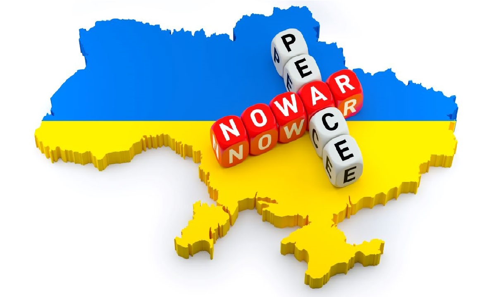
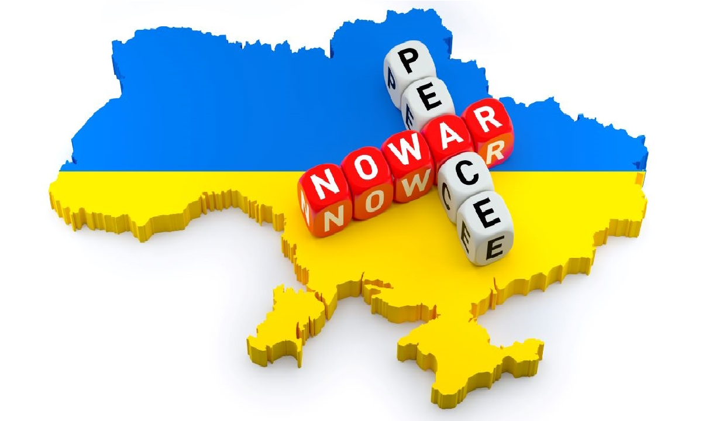

Головні новини
1 місце серед ЗВО Полтави
Полтавська політехніка – науковий лідер Полтавщини за версією рейтингу Scopus 2025!
Читати даліЗапрошуємо на Наукову Весну «Science Day – 2025» у Полтавській політехніці!
22 травня об 11:30 Національний університет «Полтавська політехніка імені Юрія Кондратюка» запрошує всіх охочих на захопливу подію – Наукову Весну «Science Day–2025»!
Читати даліІнтерактивний «День спільнодії: СенсоТека. Ти як?»
У Полтавській політехніці відбувся масштабний інтерактивний захід «День спільнодії: Сенсотека. Ти як?», проведений у межах Місяця обізнаності про ментальне здоров’я.
Читати даліНауковиця політехніки взяла участь у заході на тему академічної мобільності у STEM-галузях вищої освіти
У Відні відбувся міжнародний захід Promoting Erasmus+ Mobilities in STEM in Higher Education, який об’єднав понад 200 представників ЗВО з усієї Європи.
Читати даліСтарший геолог компанії SLB Анастасія Шибецька розповіла членам студентського відділення SPE Полтавської політехніки про роботу геолога в сервісній компанії
Для членів SPE Полтавської політехніки відбулася мотиваційно-технічна зустріч з Анастасією Шибецькою — секретарем центральноукраїнської секції SPE та досвідченим геологом.
Читати даліПолтавська політехніка – майданчик міжнародного діалогу з питань економічної безпеки
У Полтавській політехніці відбулася ІХ Міжнародна науково-практична конференція «Економічна безпека: держава, регіон, підприємство», яка, зібравши понад 100 учасників.
Читати даліПолтавська політехніка об’єднала науковців, освітян і будівельників задля розвитку будівельної галузі
У Полтавській політехніці за ініціативи керівника Полтавського територіального відділення Академії будівництва України відбулося спільне засідання із президією Академії будівництва України та науково-педагогічними працівниками ННІ будівництва, архітектури та землеустрою.
Читати даліСтратегічне партнерство задля відбудови України
У Полтавській політехніці відбулося розширене засідання Полтавського відділення АБУ. Кульмінацією стало підписання Меморандуму про стратегічне співробітництво між Конфедерацією будівельників України та університетом для посилення партнерства між освітою, наукою та бізнесом у будівельній галузі.
Читати даліСтуденти Полтавської політехніки активно долучаються до ініціатив Європейського Союзу за програмою Erasmus+
Студентка політехніки Єлизавета Дубинка взяла участь у молодіжному обміні за програмою Erasmus+ “Unity through Art and Culture” у Нідерландах, де вивчала підтримку ідей єдності, інклюзії та боротьби з дискримінацією через мистецтво та культуру.
Читати даліРоль вихователя як амбасадора науки для дитини
Кафедра психології та педагогіки Полтавської політехніки спільно з Харківською гуманітарно-педагогічною академією провели круглий стіл «Вихователь як амбасадор науки для дитини».
Читати далі